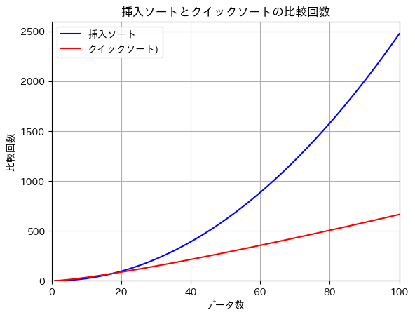
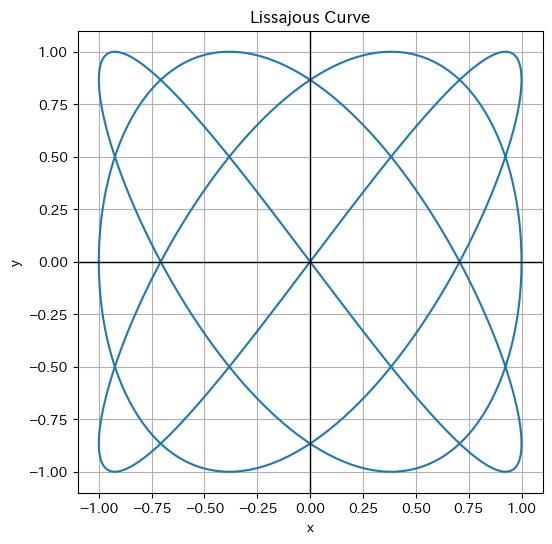

(1) グラフ関連モジュールのインポート
Pythonにはグラフを描くためのモジュールがいくつか用意されていますが、このサイトではmatplotlibライブラリのpyplotモジュールを用いてグラフを表示する方法を学びます。
pyplotモジュールのインポート
グラフを表示するプログラムのコードセルの先頭に、import matplotlib.pyplot as pltを記しておきます。これは、pyplotモジュールをpltという名前で使えるようにします。
matplotlibの日本語化ライブラリのインストール
matplotlibで日本語を表示しようとすると文字化けしてしまいます。そこで、日本語化のライブラリをインストールするために、!pip install japanize-matplotlibの一行を実行してください。
# matplotlibを日本語化するためのライブラリをインストールします。
# このファイルを開いたら、まずはこのコードセルを実行してください。
# 今後「import japanize_matplotlib」の行でエラーが出たら、このコードセルを実行し直してください。
!pip install japanize-matplotlib
Collecting japanize-matplotlib
Downloading japanize-matplotlib-1.1.3.tar.gz (4.1 MB)
━━━━━━━━━━━━━━━━━━━━━━━━━━━━━━━━━━━━━━━━ 4.1/4.1 MB 31.0 MB/s eta 0:00:00
（・・・略・・・）
Successfully built japanize-matplotlib
Installing collected packages: japanize-matplotlib
Successfully installed japanize-matplotlib-1.1.3
このように、最後の行にSuccessfully・・・と表示されれば日本語化ライブラリのインストールが完了しました。
今後、日本語化ライブラリのインポートのところでエラーが出たら、このコードを実行してください。
pyplotモジュールと日本語化ライブラリのインポート
コードセルの先頭に次のように書いて、pyplotモジュールをインポートし、コード内でpltという名前で使えるようにします。
また、2行目で日本語化ライブラリをインポートします。
import matplotlib.pyplot as plt # matplotlib: グラフを表示するためのライブラリ
import japanize_matplotlib # japanize_matplotlib: matplotlibを日本語化するためのライブラリ
この章の実習では、この２行をコードセルの先頭に記載しておきましょう。
(2) グラフの表示
グラフの表示
$x$座標と$y$座標の値をそれぞれ配列xと配列yに入れておき、plt.グラフ種類(x, y)でグラフを作成します。その後、plt.show()でグラフを表示します。
折れ線グラフの表示
折れ線グラフを作成するときは、plt.plot(x, y)で作成します。
import matplotlib.pyplot as plt # matplotlib: グラフを表示するためのライブラリ
import japanize_matplotlib # japanize_matplotlib: matplotlibを日本語化するためのライブラリ
# データ
x = [1, 2, 3, 4, 5]
y = [2, 1, 5, 3, 4]
# グラフの作成と表示
plt.plot(x, y) # 折れ線グラフを作成
plt.show() # グラフを表示する
棒グラフの表示
棒グラフを作成するときは、plt.bar(x, y)で作成します。
import matplotlib.pyplot as plt # matplotlib: グラフを表示するためのライブラリ
import japanize_matplotlib # japanize_matplotlib: matplotlibを日本語化するためのライブラリ
# データ
x = [1, 2, 3, 4, 5]
y = [2, 1, 5, 3, 4]
# グラフの作成と表示
plt.bar(x, y) # 棒グラフを作成
plt.show() # グラフを表示する
(3) グラフの設定
グラフの種類
代表的なグラフの種類の一部を紹介します。
| グラフ種類 |
コード |
説明 |
| 折れ線グラフ |
plt.plot() |
データを連続する線で表示します。時系列データなどの可視化によく使用されます。 |
| 棒グラフ |
plt.bar() |
各カテゴリの値を棒で表示します。カテゴリごとの数量や頻度を比較するのに便利です。 |
| 水平棒グラフ |
plt.barh() |
各カテゴリの値を水平な棒で表示します。 |
| ヒストグラム |
plt.hist() |
データの分布を表示します。データの範囲を等間隔のビンに分割し、各ビンのデータ数を示します。 |
| 散布図 |
plt.scatter() |
2つの変数の関係を点で表示します。 |
| 箱ひげ図 |
plt.boxplot() |
データの分布、中央値、最大値、最小値を表示します。外れ値の検出にも使われます。 |
| 円グラフ |
plt.pie() |
各カテゴリの割合を円グラフで表示します。 |
| エラーバー |
plt.errorbar() |
データの不確実性を示すエラーバーを含んだグラフを描画します。 |
その他のグラフの種類は、matplotlibの公式ドキュメントを参照してください。
グラフの書式
グラフの書式を設定するコードは、plt.show()より前に記述します。
グラフのタイトルと軸ラベル
次のコードでグラフのタイトルと軸ラベルを表示することができます。
plt.title("グラフのタイトル")
plt.xlabel("x軸のラベル")
plt.ylabel("y軸のラベル")
軸
次のコードでグラフの軸を表示することができます（これを入れないと、軸は表示されない）。lwは線の太さを指定します 。
plt.axvline(0, color="black", lw=0.5) # y軸(x=0の線)を表示
plt.axhline(0, color="black", lw=0.5) # x軸(y=0の線)を表示
plt.axvline(x, color, linestyle, linewidth)は座標xの位置に垂直線を描くために用います。基本的には上記のように軸を表示するために用います。また、plt.axhline(y, color, linestyle, linewidth)は座標yの位置に水平線を描くために用います。
colorは、"red"，"blue"などの色名のほか、カラーコード（#FF5733など）で指定します。
linestyleは、"-"(実線:デフォルト)，"--":破線，":": 点線，"-.": 点と破線が使えます。
グラフの描画範囲
次のコードでグラフを描画する範囲を設定します。
plt.xlim(0, 10) # x軸を0〜10の範囲で描画
plt.ylim(-5, 5) # y軸を-5〜5の範囲で描画
グリッド線
次のコードでグラフのグリッド線を追加します。
plt.grid(True)
マーカーの書式と系列名
複数の系列がある場合、次のようにplt.plotを複数回呼び出します。また、このときマーカーの書式と系列名を指定します（系列名は後述の凡例で表示します。）。
折れ線グラフ
折れ線グラフでは、次のように書式を設定することができます。
plt.plot(x, y, marker="o", markersize=5, color="red", linewidth=1, label="系列名")
markerでは、マーカーの形を指定します（"o": 円，"s": 四角形, "^": 三角形）。
markersizeでは、マーカーの大きさを指定します。
colorは、"red"，"blue"などの色名のほか、カラーコード（#FF5733など）で指定します。
linewidthでは、折れ線の太さを指定します。
散布図
plt.scatter(x1, y1, color="red", s=10, label="系列1の系列名") # 系列1のプロット
plt.scatter(x2, y2, color="blue", s=20, label="系列2の系列名") # 系列2のプロット
colorは、"red"，"blue"などの色名のほか、カラーコード（#FF5733など）で指定します。
sは、マーカーのサイズを指定します。
凡例
凡例の表示
凡例を表示するには、次のように書きます。
plt.legend()
凡例の位置
凡例の位置は自動で最適な位置に配置されますが、位置を指定したい場合はlocパラメータを用います。
plt.legend(loc="upper right")
locパラメータに指定可能な値は"upper right", "upper left", "lower left", "lower right", "right", "center left", "center right", "lower center", "upper center", "center" があります。
凡例の枠線
凡例の枠線を非表示にするには、frameon=Falseを指定します。
plt.legend(frameon=False)
グラフの大きさ
グラフの大きさを指定する場合は、plt.figure(figsize=(横, 縦))を指定します。
plt.figure(figsize=(10, 6))
グラフの保存・ダウンロード
グラフの保存
グラフを保存する場合は、plt.show()の前に次の保存する処理を書きます。保存先は、Google Colabの一時的な保管場所です。"ファイル名.png"のところは適宜変更してください。
plt.savefig("ファイル名.png", bbox_inches="tight")
bbox_inches="tight"はグラフの余白を小さくするためのオプションで、省略可能です。
グラフ画像のダウンロード
グラフ画像を自分のパソコンにダウンロードする場合は、Colabのfilesモジュールを使います。
from google.colab import files # filesモジュールをインポート（コードセルの一番上に記述）
files.download("ファイル名.png") # 対象のファイルをダウンロードする（savefigのあとに記述）
(4) NumPy
NumPy
NumPy（Numerical Pythonの略）は、数値計算用のライブラリです。ここでは主に関数のグラフを描くときなどに用いますが、ほかにも配列や統計などに用いる機能も多くそろえています。
NumPy配列の生成
NumPyの機能を用いて、実数値のリストを生成するためには、np.arange(start, stop, step)を用います。末尾の要素はstopの１つ前までになります。
例えば、-1.0から+1.0まで0.1間隔の値のリストを生成するには、np.arange(-1.0, 1.1, 0.1)と書きます。
このようにして生成したリストをNumPy配列といいます。
※通常のリストでは整数しか扱えないのに対して、NumPy配列は実数値を扱えます。
import numpy as np # numpy: 数値計算用のライブラリ
x = np.arange(-1.0, 1.1, 0.1)
print(x)
[-1.00000000e+00 -9.00000000e-01 -8.00000000e-01 -7.00000000e-01
-6.00000000e-01 -5.00000000e-01 -4.00000000e-01 -3.00000000e-01
-2.00000000e-01 -1.00000000e-01 -2.22044605e-16 1.00000000e-01
2.00000000e-01 3.00000000e-01 4.00000000e-01 5.00000000e-01
6.00000000e-01 7.00000000e-01 8.00000000e-01 9.00000000e-01
1.00000000e+00]
Pythonでは、$1.23\times10^4$を1.23e4，$-5.67\times10^{-8}$を-5.67e-8のように、$\times10^{x}$をe$x$と表します。
浮動小数点数の誤差があるため、「0」となるところは「-2.22044605e-16」（限りなく「0」に近い）となっています。
NumPy配列の計算
NumPy配列xに対して、xの各要素をそれぞれ3倍するときには、3 * xと書きます（通常の配列ではfor文を用いる必要がある）。
次の例では、-1.0から+1.0まで0.1間隔で生成した格納したNumPy配列xの各要素を３倍して変数yに格納します。
import numpy as np # numpy: 数値計算用のライブラリ
x = np.arange(-1.0, 1.1, 0.1) # -1.0から1.0
y = 3 * x
print(y)
[-3.00000000e+00 -2.70000000e+00 -2.40000000e+00 -2.10000000e+00
-1.80000000e+00 -1.50000000e+00 -1.20000000e+00 -9.00000000e-01
-6.00000000e-01 -3.00000000e-01 -6.66133815e-16 3.00000000e-01
6.00000000e-01 9.00000000e-01 1.20000000e+00 1.50000000e+00
1.80000000e+00 2.10000000e+00 2.40000000e+00 2.70000000e+00
3.00000000e+00]
NumPyの数学関数
NumPyでは、数学で用いる各種関数も扱えます。
対数
np.log10(x)でxの常用対数を求めることができます（np.log(x)は自然対数）。
import numpy as np # numpy: 数値計算用のライブラリ
x = np.arange(0.1, 10.1, 0.1) # 0.1から10までの範囲で0.1間隔
y = np.log10(x) # 常用対数を計算 (底は10)
print(y)
[-1. -0.69897 -0.52287875 -0.39794001 -0.30103 -0.22184875
-0.15490196 -0.09691001 -0.04575749 0. 0.04139269 0.07918125
0.11394335 0.14612804 0.17609126 0.20411998 0.23044892 0.25527251
0.2787536 0.30103 0.32221929 0.34242268 0.36172784 0.38021124
0.39794001 0.41497335 0.43136376 0.44715803 0.462398 0.47712125
0.49136169 0.50514998 0.51851394 0.53147892 0.54406804 0.5563025
0.56820172 0.5797836 0.59106461 0.60205999 0.61278386 0.62324929
0.63346846 0.64345268 0.65321251 0.66275783 0.67209786 0.68124124
0.69019608 0.69897 0.70757018 0.71600334 0.72427587 0.73239376
0.74036269 0.74818803 0.75587486 0.76342799 0.77085201 0.77815125
0.78532984 0.79239169 0.79934055 0.80617997 0.81291336 0.81954394
0.8260748 0.83250891 0.83884909 0.84509804 0.85125835 0.8573325
0.86332286 0.86923172 0.87506126 0.88081359 0.88649073 0.8920946
0.89762709 0.90308999 0.90848502 0.91381385 0.91907809 0.92427929
0.92941893 0.93449845 0.93951925 0.94448267 0.94939001 0.95424251
0.95904139 0.96378783 0.96848295 0.97312785 0.97772361 0.98227123
0.98677173 0.99122608 0.99563519 1. ]
三角関数
np.sin(x)でxの正弦(sin)を求めることができます（np.cos(x)では余弦(cos)，np.tan(x)では正接(tan)）。
ただし、sinの引数に指定する値は平面角（ラジアン）で表されたものなので、角度をラジアンに変換してから引数として渡します。
また、np.piで円周率$\pi$を表します。
import numpy as np # numpy: 数値計算用のライブラリ
degrees = np.arange(0, 361, 15) # 0から360までの範囲で15間隔
radians = np.radians(degrees) # 角度をラジアンに変換
y = np.sin(radians) # sinを計算
print(y)
[ 0.00000000e+00 2.58819045e-01 5.00000000e-01 7.07106781e-01
8.66025404e-01 9.65925826e-01 1.00000000e+00 9.65925826e-01
8.66025404e-01 7.07106781e-01 5.00000000e-01 2.58819045e-01
1.22464680e-16 -2.58819045e-01 -5.00000000e-01 -7.07106781e-01
-8.66025404e-01 -9.65925826e-01 -1.00000000e+00 -9.65925826e-01
-8.66025404e-01 -7.07106781e-01 -5.00000000e-01 -2.58819045e-01
-2.44929360e-16]
(5) 関数とグラフ
関数のグラフ
実習1 放物線
次の例では、$y=x^2$のグラフを表示します。
import matplotlib.pyplot as plt # matplotlib: グラフを表示するためのライブラリ
import japanize_matplotlib # japanize_matplotlib: matplotlibを日本語化するためのライブラリ
import numpy as np # numpy: 数値計算用のライブラリ
degrees = np.arange(0, 361, 1) # 角度の値を生成: 0度から360度まで、1度間隔
radians = np.radians(degrees) # 角度をラジアンに変換
y = np.sin(radians) # yの値を計算: y = sin(x)
# グラフの作成と表示
plt.plot(degrees, y, label="y = sin(x)") # degreesとyの値をプロット
plt.title("y = sin(x)のグラフ (x は角度)") #s グラフのタイトルを設定
plt.xlabel("角度 (度)") # x軸のラベルを設定
plt.ylabel("y") # y軸のラベルを設定
plt.axhline(0, color="black", lw=0.5) # x軸を表示(y=0の線を描く)
plt.axvline(0, color="black", lw=0.5) # y軸を表示(x=0の線を描く)
plt.legend() # 凡例を表示
plt.grid(True) # グリッド線を表示
plt.show() # グラフを表示
y = x**2のところをy = 2 * x**2 - 20 * x - 20などと変えてもう一度実行してみましょう。
実習2 サインカーブ
次の例では、$y=\sin x$のグラフを表示します。
import matplotlib.pyplot as plt # matplotlib: グラフを表示するためのライブラリ
import japanize_matplotlib # japanize_matplotlib: matplotlibを日本語化するためのライブラリ
import numpy as np # numpy: 数値計算用のライブラリ
# 媒介変数t設定
t = np.linspace(-np.pi, np.pi, 1000) # -π〜+πまで1000等分した値を生成
# xとyの値を設定
x = np.cos(t)
y = np.sin(t)
# グラフの作成と表示
plt.figure(figsize=(6, 6)) # グラフの大きさを設定
plt.plot(x, y) # xとyの値をプロット
plt.axhline(0, color="black", lw=0.5) # x軸を表示(y=0の線を描く)
plt.axvline(0, color="black", lw=0.5) # y軸を表示(x=0の線を描く)
plt.grid(True) # グリッド線を表示
plt.show() # グラフの表示
y = np.sin(radians)のところを、y = 2 * np.sin(2 * radians + np.pi / 8)などと変えてもう一度実行してみましょう。
２系列のグラフ
複数の系列を同時に表示するためには、次のようにy1, y2のNumPy配列を用意し、それぞれについてプロットを作成する記述plt.plot(x, y1, ...)，plt.plot(x, y2, ...)を書きます。
実習3 挿入ソートとクイックソートの比較回数
挿入ソートの平均比較回数は $n(n-1)/4$，クイックソートの平均比較回数は$n \log_2{n}$ と表せます。次の例では、挿入ソートの平均比較回数とクイックソートの平均比較回数を比較するために2系列のグラフを表示します。
import matplotlib.pyplot as plt # matplotlib: グラフを表示するためのライブラリ
import japanize_matplotlib # japanize_matplotlib: matplotlibを日本語化するためのライブラリ
import numpy as np # numpy: 数値計算用のライブラリ
# xの値を生成: 1から100までの整数値
x = np.arange(1, 101)
# yの値を計算
y1 = x * (x - 1) / 4 # 挿入ソートの平均比較回数
y2 = x * np.log2(x) # クイックソートの平均比較回数
# グラフの作成と表示
plt.plot(x, y1, label="挿入ソート", color="blue") # 挿入ソートのグラフをプロット
plt.plot(x, y2, label="クイックソート)", color="red") # クイックソートのグラフをプロット
plt.title("挿入ソートとクイックソートの比較回数") # グラフのタイトルを設定
plt.xlabel("データ数") # x軸のラベルを設定
plt.ylabel("比較回数") # y軸のラベルを設定
plt.axhline(0, color="black", lw=0.5) # x軸を表示(y=0の線を描く)
plt.axvline(0, color="black", lw=0.5) # y軸を表示(x=0の線を描く)
plt.xlim(0, 100) # x軸の範囲を設定
plt.ylim(0) # y軸の範囲を設定（下限のみ）
plt.legend() # 凡例を表示
plt.grid(True) # グリッド線を表示
plt.show() # グラフを表示

媒介変数を用いたグラフ
実習4 円のグラフ
媒介変数$t$を用いると、円の$x$座標と$y$座標は次のように表すことができます。
\[
x = \cos t
\]
\[
y = \sin t
\]
$t$を$-\pi$〜$+\pi$まで変化させたとき、$x$と$y$の値についてグラフを作成し表示します。
NumPyを用いて$-\pi$〜$\pi$まで1000等分した値を生成して配列tに格納するときは、t = np.linspace(-np.pi, np.pi, 1000)と書きます。
import matplotlib.pyplot as plt # matplotlib: グラフを表示するためのライブラリ
import japanize_matplotlib # japanize_matplotlib: matplotlibを日本語化するためのライブラリ
import numpy as np # numpy: 数値計算用のライブラリ
# 媒介変数t設定
t = np.linspace(-np.pi, np.pi, 1000) # -π〜+πまで1000等分した値を生成
# xとyの値を設定
x = np.cos(t)
y = np.sin(t)
# グラフの作成と表示
plt.figure(figsize=(6, 6)) # グラフの大きさを設定
plt.plot(x, y) # xとyの値をプロット
plt.axhline(0, color="black", lw=0.5) # x軸を表示(y=0の線を描く)
plt.axvline(0, color="black", lw=0.5) # y軸を表示(x=0の線を描く)
plt.grid(True) # グリッド線を表示
plt.show() # グラフの表示
実習5 リサジュー曲線
互いに直行する二つの単振動を合成して得られる平面図形をリサジュー曲線といいます。リサジュー曲線は音波などの周波数の測定に用いられることが多く、基準波を横軸に、被測定波を縦軸に入力すると、上下に描かれた山の数と左右に描かれた山の数が基準波と被測定波の周波数比となって現れます。これを画面に表示したものがオシロスコープです。
簡単なリサジュー曲線の式は次の用に表すことができます。
\[
x = \sin (at + \delta)
\]
\[
y = \sin bt
\]
媒介変数$t$が$-\pi$〜$+\pi$に変化すると、$x$と$y$の値が同時に変化します。
次の例では、$a=3$，$b=4$としたときのリサジュー曲線を表示します。
import matplotlib.pyplot as plt # matplotlib: グラフを表示するためのライブラリ
import japanize_matplotlib # japanize_matplotlib: matplotlibを日本語化するためのライブラリ
import numpy as np # numpy: 数値計算用のライブラリ
# パラメータの設定
a = 3
b = 4
delta = np.pi / 2 # 90度の位相差
t = np.linspace(-np.pi, np.pi, 1000) # -π〜+πまで1000等分した値を生成
# リサジュー曲線の方程式
x = np.sin(a * t + delta)
y = np.sin(b * t)
# グラフの作成と表示
plt.figure(figsize=(6, 6))
plt.plot(x, y)
plt.title("Lissajous Curve")
plt.xlabel("x")
plt.ylabel("y")
plt.axvline(0, color="black", lw=1) # x軸
plt.axhline(0, color="black", lw=1) # y軸
plt.grid(True)
plt.show()

$a$,$b$の値を、$a=1$,$b=2$や$a=5$,$b=4$などと変えてもう一度実行してみましょう。